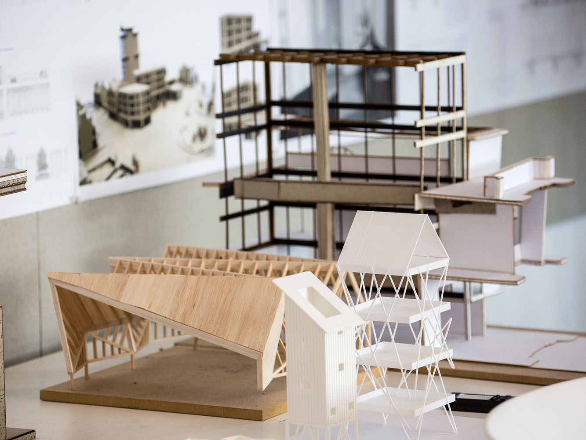
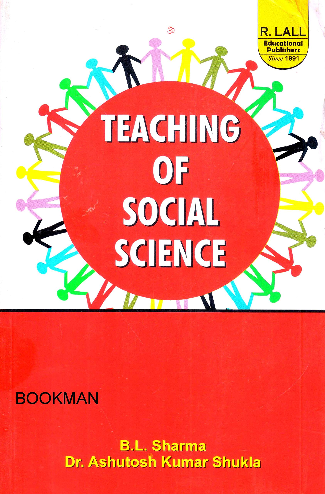

About Christ Deemed to be University
Check It Out
Business and Management
Architecture
Social Sciences
Eng & Tech.
Education
-
Research is nothing but a blind date with some knowledge!
-Will HarveyDear Christies,
School of Sciences at CHRIST University has created a niche in the realm of higher education in India through its programmes. It offers undergraduate, postgraduate, doctoral, and post-doctoral programmes in the disciplines of Chemistry, Physics & Electronics, Mathematics, Life Sciences, and Computer Science & Statistics. Research and publication, even at the undergraduate level, are an integral part of these programmes. The consistent top rankings of many of these programmes by different agencies stand testimony for our credentials. A number of research projects funded by agencies like UGC, DST, ISRO, SERB, NCBS, KSTA, etc have been carried out by our dedicated faculty members. A dedicated research block with all the latest research facilities boosts the morale of the faculty and research scholars alike. This is an ideal place for students with a research bent of mind to explore his/her passion. Apart from academics, students are molded holistically through various co-curricular and extracurricular activities. As the Dean, School of Sciences, I am proud to hold my team in high esteem and invite students and faculties to join my team to take it to newer heights.
- Dr. George Thomas C
(MSc, MPhil, PhD)
Email: dean.sciences@christuniversity.in

-
Whoever controls the volume of money in any country is absolute master of all industry and commerce.
-James A. GarfieldDear Christies,
Glad to see you joining us in our pursuit seeking excellence and service through our educational programs, advanced research, outreach activities, and professional services.The commencement of the department of Commerce on 15 July 1969, and its storied evolution into the prescient School of Commerce, Finance and Accountancy that it represents today, is credited to the commitment of several who grew with us. Over these years, as steward of an updated and relevant curriculum, and quality infrastructure, we have not just encouraged and supported the innovative efforts of our stakeholders to distill the prevailing global challenges and opportunities shaping our lives, but also educate students on how best to advance intellectual knowledge, and impact society for the better.
- Dr Tomy K Kallarakal
(MCom, PGDPM & IR, MPhil, PhD)
Email: dean.commerce@christuniversity.in

-
Life beats down and crushes the soul and art reminds you that you have one.
-Stella AdlerDear Christies,
Welcome to the School of Arts and Humanities!You are twice blessed!! Firstly, for having successfully secured a place at CHRIST University, a pioneer in the field of liberal education in the country; secondly, for choosing Arts and Humanities stream for furthering your educational aspirations. I’m sure, right now you feel quite elated about your choices. In due course you would feel proud too, for having chosen this road to travel by. For here, in an environment of autonomy and inclusivity you will learn to read and interpret the world from multiple perspectives; you will develop your abilities to think critically and independently. Your exposure to the breadth, diversity and creativity of human experience will transform you into better human beings and responsible citizens. The courses and people you engage with will spur you to have deeper reflections of your responsibilities to your own self and to those around you in a society where the local, national and global needs often converge. In the process your vision of / for the world will expand. In a spirit of openness and cooperation you will learn to appreciate the value and relevance of harmonious coexistence.
- Dr John Joseph Kennedy
(MA, PGDES, MLitt, PhD)
Email: dean.hss@christuniversity.in

-
If you must break the law, do it to seize power: in all other cases observe it.
-Julius CaesarDear Christies,
School of Law, CHRIST (Deemed to be University), through its five-year law Program, has carved a space for itself in the top league of premier law schools in India. The school molds its students through a combination of exposure to the advanced syllabus, clinical legal education programs, and faculty monitored participation in curricular and extra-curricular activities. The syllabus for the five-year program goes far beyond the basic requirements of the Bar Council of India reflecting the current trends and demands of academia and the industry. Besides having a league of highly qualified faculty, the educational process is supported by a library equipped with a rich depository of online and offline resources. The commitment to excel is evident in the challenging yet smooth transition to the online mode of education in the wake of the adversities thrown up by the pandemic. The School of Law will strive to work with an untiring commitment to the cause of rule of law and promotion of excellence in the realm of legal education in India.
- Dr Jayadevan S Nair
(BA LLB, LLM, Ph.D)
Email: dean.law@christuniversity.in

-
If you want to kill any idea in the world, get a committee working on it.
-Charles KetteringDear Christies,
SBM offers undergraduate, graduate, and research programs in Management, Hospitality, and Travel & Tourism. We operate from three campuses in Bengaluru – Central campus, Bannerghatta Road Campus (BGR), and Kengeri campus – as well as at Pune-Lavasa and Delhi-NCR. Among business schools in India, we are unique in terms of the scale of operations, diversity and representation from all parts of India, as well as offering quality education at a competitive fee structure.Our hallmark is the experiential learning through live projects, internships, service learning, and holistic education through co-curricular and extra-curricular activities. In our MBA program, we provide experiential learning through cases from Harvard and other reputed sources.The curriculum includes research based assignments, and also provides an opportunity for self-learning – which supports the students in lifelong learning. External inputs from corporate executives is an integral part of the pedagogy, thus preparing the students for careers in the industry. Our strong alumni network is a valuable asset in this regard. Our syllabus is updated on an annual basis to stay current in a dynamic environment.
- Dr. Jain Mathew
(MCom, MPhil, PhD)
Email: dean.management@christuniversity.in

-
It is not the beauty of a building you should look at; its the construction of the foundation that will stand the test of time.
-David Allan CoeDear Christies,
Architectural Education at CHRIST offers an opportunity to be part of creative innovation in design thinking, design teaching, and design learning. We are committed to providing a tremendous opportunity, to engage in an experiential learning environment using the Design studio space as a design thinking workshop, where ideas are explored and theoretical subjects are integrated. The Studio on Wheels the traveling classroom is a unique pedagogical approach adopted for an experiential teaching-learning practice in our education at CHRIST. These intensive studio sessions are designed to engage deeper learning and discourse on social and environmental issues, set within a selected geographic area or community precinct thus rendering a global perspective to the curriculum.
- Dr Anitha Suseelan
Email: hod.architecture@christuniversity.in
 -
I've always been torn between the pure and the social sciences.
-Ian GoldinDear Christies,
As Dean of the school, I am proud of the rich research and practice-based disciplines represented in the school. Our programs prepare students to take up diverse roles ranging from practice, research, and administration. All campuses of the university offer programmes in Social sciences, thereby increasing access and generating wider options for prospective students. Our school strongly believes in the value of interdisciplinarity and engages students and faculty in a variety of interdisciplinary experiences and programs. Central to the success of students in our school is the emphasis on engaging pedagogic practices and research-informed curriculum. Closely linked to the central core values of Social Responsibility, Integrity, and Excellence, our programmes strive to give the best student experience in social and behavioral sciences.I am also proud of the diverse and rich experience that our faculty bring to the school from Industry, community, and academia.
- Tony Sam George
(MSW, MPhil, PhD)
Email: dean.socialsciences@christuniversity.in
 -
Science is about knowing; engineering is about doing.
-Henry PetroskiDear Christies,
CHRIST (Deemed to be University), Bangalore Kengeri Campus since its inception in 2009 has been a pioneer in its field. Throughout the years, we has managed to set several landmarks and maintain its position as a premier institution in our nation. CHRIST (Deemed to be University), Kengeri Campus, nears the epitome of the serene environment that is required for a well-balanced educational and academic life. Spread across an area of 78.5 acres, it is a lush green campus with lots of amenities. The Mysore Horticulture Society, Lalbagh, Bangalore has awarded the Special Outstanding Prize of ‘Best Ornamental Gardens’ to Kengeri Campus for five years consecutively starting from 2014. The vibrancy of this campus is its diversity in accommodating students and faculty of multidisciplinary programmes catering to wide variety of courses. Emphasis on skilling and industry oriented courses, including provisions to study minors/honours courses like Engineering clubbed with Psychology /CIMA/Management/Architecture are the salient features of this campus.
- Dr Iven Jose
(BE, MTech, PhD)
Email: dean.engineering@christuniversity.in

-
Education is the most powerful weapon which you can use to change the world.
-Nelson MandelaDear Christies,
Welcome to the School of Education
The faculty of the School of Education are a remarkable group of competent and highly educated and experienced professionals who are experts in their fields. Faculty domains are in multicultural education, social justice educa-tion, child and adolescent development, multicultural counselling skills, digi-tal literacy, inclusive and special education, international education, profes-sional development and reflective practices, educational leadership and management, environmental influences on learning, contemporary issues in education.
- Dr Greta D'Souza
Email: hod.education@christuniversity.in
-
I do not think the Nobel institution gives you a certificate that everything you say is always right.
-Piyush Goyal
Certification helps in learning the new technologies, skills, and abilities for a specific promotion. Earning a new certification or an advanced certification in a particular area of expertise can help in advancing your career.